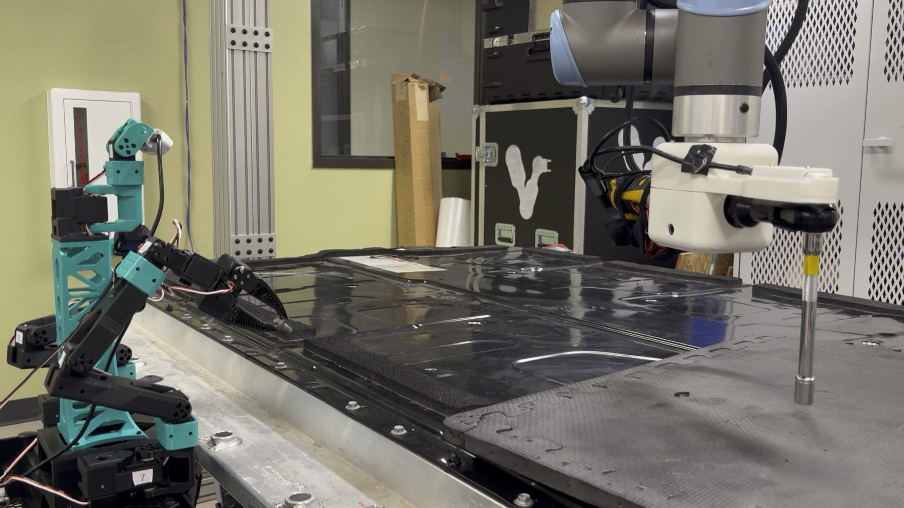
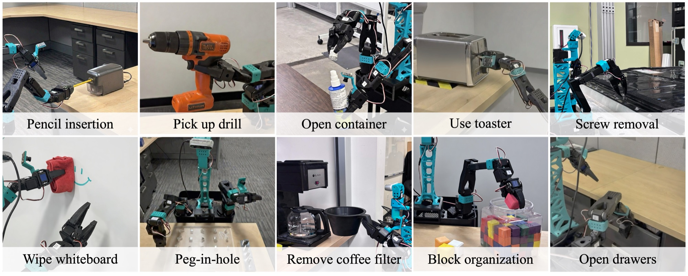

Two arms, a mobile base, and the computer on board.
An open-source, two-arm robot you can build for $1,247 in parts. Its Jetson computer rides on board, so it learns tasks and runs them on battery, with no laptop attached.

- $1,247in parts, computer included
- 49 / 50bottle lifts by an ACT policy trained on the robot
- > 40 cmreach on each of two SO-101 arms
- 288 Whpower station on board
Two arms, driven by you or by a learned policy
Drive both arms from a VR headset, record what you do, and train the robot to repeat it. Recording, training, and running all happen on the robot.

What changed from XLeRobot
XLeRobot runs its learned policies on a separate laptop. XLeRobot-Pro puts the computer on board, and the full robot runs on its own, without brownouts.
- Computer on boardA Jetson Orin Nano Super records, trains, and runs policies on the robot.
- Runs on its own, without brownoutsThe arms have their own power outlet and no longer share servo buses with the head and wheels.
- Thicker printed linksLoad-bearing arm links have thicker walls, so they carry the added load.
Four steps from parts to a first reach
No robotics experience needed. Follow the four pages in order.
Stuck? Troubleshooting lists fixes by symptom.
Credits
Artemis Shaw, Chen Liu, Justin Costa, Rane Gray, Alina Skowronek, Kevin Diaz, Nam Bui, Nikolaus Correll.
Built on LeRobot by Hugging Face and XLeRobot by Vector-Wangel.